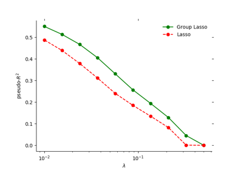
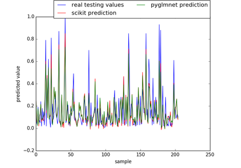
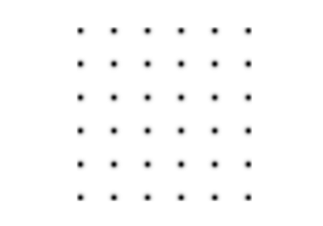

pyglmnet
1.0.1
Installation
Getting Started
Tutorial
Cheatsheet
Examples Gallery
Group Lasso Regularization
Community and Crime
Tikhonov Regularization
API Documentation
Developer Documentation
Requests for pull requests
Resources
Current
Version 0.1
pyglmnet
Docs
»
Examples Gallery
View page source
Examples Gallery
¶

Group Lasso Regularization

Community and Crime

Tikhonov Regularization
Generated by Sphinx-Gallery